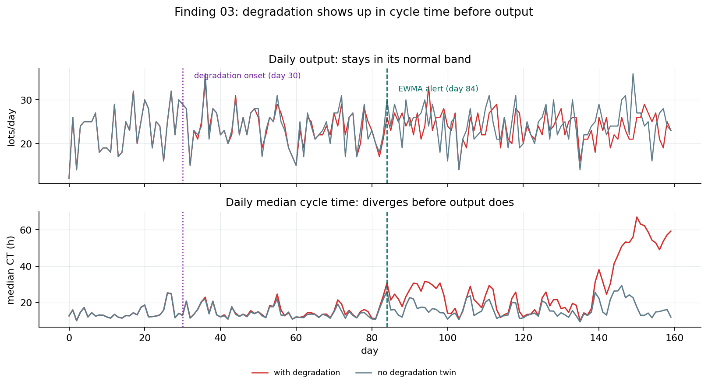

Scenario Runner Demo
An interactive view of the same precomputed, fixed-seed what-if library the project page cites. Nothing runs live here: every number below is traceable to a recorded CRN-paired run on the synthetic line. The first four tabs map to the agent's four what-if decision modules; the monitoring tab is a separate slow-drift detection demo, not a fifth what-if decision module.
| Station | Added Lot-Processing Slots | Avg Cycle-Time Reduction | Investment-Stress Net Cost Change |
|---|---|---|---|
| LITHO | |||
| FURNACE | |||
| DEPO | |||
| METRO |
The recorded library covers PM timing on LITHO, the engineered bottleneck. The underlying engine accepts a station parameter, but only the LITHO runs are published.
The recorded library covers the LITHO +1 scenario: LITHO is the engineered bottleneck, so the speed-yield tension is sharpest there.
| Monitoring approach | Signal watched | Alert logic | Result |
|---|---|---|---|
| Output-only monitor | Daily output / throughput | Alert only when output drops below the clean baseline lower control limit. | |
| EWMA drift monitor | Daily median lot cycle time | Alert when small persistent cycle-time drift accumulates. |

Observation: daily output remains noisy but ordinary, while daily median cycle time separates from the clean twin after degradation starts.
Scope: this page is a bounded demo over a precomputed scenario library; it does not run new simulations or accept free-form parameters. The line is synthetic with fixed seeds; cost figures are illustrative assumptions used for ranking, not real-fab prices or savings forecasts. The memo preview uses a fixed template, not a live language model.